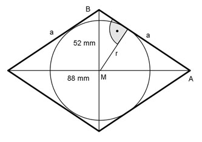

Flächenberechnungen Aufgabe 83 Wie groß ist der Inkreisradius einer Raute, deren Diagonalen 52 mm und 88 mm lang sind?  Satz von Pythagoras im Dreieck MAB: 52 88 a² = (----)² + (----)² 2 2 a² = 676 + 1936 mm² a² = 2 612 mm² |√ a = 51,1 mm Fläche des Dreiecks MAB errechnet über die beiden Katheten: 52 88 ---- mm * ---- mm 2 2 26 mm * 44 mm A = -------------------- = ----------------- = 572 mm² 2 2 Fläche des Dreiecks MAB errechnet über die Grundseite a und die Höhe r = Inkreisradius: a * r 572 = ------- |*2 2 2 * 572 = a * r |:a 2 * 572 mm² r = --------------- = 22,4 mm 51,1 mm